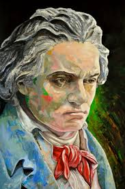
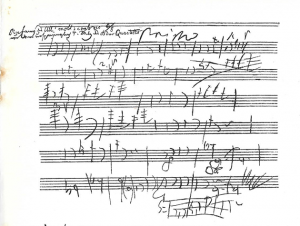
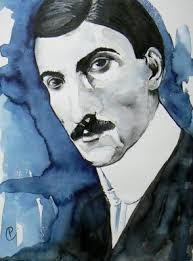
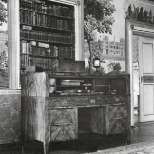

   
Beste Zweig vriendinnen en –vrienden,
Stefan Zweig heeft in zijn werkzaam leven veel belangstelling gehad voor muziek: contacten met de grote dirigenten en componisten uit zijn tijd, verwoed verzamelaar van muziekmanuscripten en zijn langdurig verblijf in de Festspiele-stad Salzburg was hierbij zeker behulpzaam. Het werk van Ludwig van Beethoven had zijn bijzondere belangstelling.
Volgend jaar wordt het 250ste verjaardag van Beethoven herdacht met groots opgezette festiviteiten in onder meer Bonn, de geboortestad van Beethoven. Een van de organisatoren in Bonn is onze Stefan Zweig vriend Joachim Brügge van het Internationale Stefan Zweig Gesellschaft in Salzburg. Het programma in Bonn zal op 17 en 18 april 2020 plaatsvinden. Wij houden u op de hoogte van het programma.
Om u alvast te introduceren in het Beethovenjaar 2020 heeft de u intussen bekende schrijver over Zweig en zijn werk Piet Wackie Eysten een verhaal geschreven over de relatie tussen Ludwig Van Beethoven en Stefan Zweig. Met groot genoegen drukken wij hieronder het eerste deel af en u kunt het tweede deel begin 2020 tegemoet zien.
Wij wensen u prettige feestdagen, een goede jaarwisseling en veel leesplezier.
Dirk Jansen
Zweig en Beethoven
I
Als gymnasiast was hij al begonnen met het verzamelen van handschriften. Karl-Emil Franzos, uitgever van het in Berlijn verschijnende blad Deutsche Dichtung, waarin spoedig Stefans eerste gedichten zouden verschijnen, was een vermaard autografenverzamelaar. Met hem voert Zweig reeds als tiener een levendige correspondentie over hun gedeelte passie. In een brief van 18 februari 1898 – Zweig is dan net 16 jaar – biedt hij Franzos enkele stukken aan uit zijn eigen, nog bescheiden verzameling, onder andere een lange brief van Wieland, een door Goethe eigenhandig ondertekende brief en ‘ein unterschriebenes eigenhänd. Billet von Beethoven, sehr drastischen Inhalts’, voegt hij eraan toe. Het is hem menens. In 1914 verschijnt in de Weense Bibliophilenkalender een opstel van zijn hand met de veelzeggende titel Die Autographensammlung als Kunstwerk.
In april 1904 voltooit Zweig, hij is dan 22 jaar, zijn studie aan de Universiteit van Wenen met een dissertatie over Die Philosophie des Hippolyte Taine. In de inleiding tot dat proefschrift valt in zijn oeuvre voor het eerst de naam Beethoven. Hij betreurt, schrijft hij, het huidige ontbreken van creatieve scheppingskracht, grote geesten als weleer lijken er niet meer te zijn, ‘Napoleon, Goethe, Beethoven und Byron sind gestorben’. Ligt hier de kiem van de hartstocht waarmee hij zijn leven lang zo’n hartstochtelijk verzamelaar is gebleven van handschriften van grote geleerden en beroemde kunstenaars? Probeert hij daarmee de scheppende mens, het genie nader te komen, hem als het ware aan het werk te zien? Een bladzijde van Balzac met ontelbare correcties, een lied van Schubert met doorhalingen, een tekening van Dürer, ‘een eerste notitie van Beethoven, met zijn wilde, ongeduldige krassen, zijn woeste wirwar van begonnen en verworpen motieven, met daarin de tot een paar potloodstrepen gecomprimeerde scheppingsdrift van zijn demonisch geladen wezen’, zoals hij in zijn herinneringen Die Welt von gestern schrijft, het zijn voor hem even zovele mogelijkheden om oog in oog te staan met de scheppende kunstenaar, het ontstaan van een kunstwerk mee te beleven.
Zijn passie voor het verzamelen van handschriften blijkt hij te delen met de Franse schrijver, musicoloog en Beethovenbiograaf Romain Rolland, die hij voor het eerst ontmoet in 1913. In Die Welt von gestern beschrijft hij uitvoerig zijn eerste bezoek aan Rolland in Parijs, in april van dat jaar. Hij verbaast zich over Rollands kleine studeerkamer, ‘waar de boeken tot aan het plafond opgestapeld stonden’, en voegt daar in zijn dagboek aan toe: ‘Als wandversiering niets anders dan het dodenmasker van Beethoven en een portret van Richard Strauss’ [met wie Rolland goed bevriend was, pwe]. De hoofdpersoon in Rollands grote romancyclus Jean Christophe is een geniale jonge Duitse musicus, waarvoor Beethoven model heeft gestaan.
Gedurende de Eerste Wereldoorlog, als Zweig geruime tijd in Zwitserland verblijft, waar Rolland werkzaam is voor het Agentschap voor Krijgsgevangenen van het Rode Kruis, ontmoeten zij elkaar regelmatig. Tijdens zijn verblijf in Zwitserland in die oorlogsjaren is Zweig uiterst somber over het verloop van de oorlogshandelingen. Maar er zijn ook lichtere momenten. Op 26 oktober 1915 heeft hij een concert van het beroemde Rosé-kwartet bijgewoond. Zij hebben Beethoven gespeeld. ‘Ich lebe noch heute davon,’ noteert hij de volgende dag in zijn dagboek. Beethovens muziek ‘spoelde het vuil, de zwarte neerslag van de gebeurtenissen, van mij af.’
In maart 1927 wonen Zweig en Rolland samen in Wenen de concerten en feestelijkheden bij ter gelegenheid van het honderdste sterfjaar van hun gemeenschappelijke held. In de Weense krant Neue Freie Presse publiceert Rolland een ‘hommage’ aan Beethoven.
Rolland is een van de weinigen onder Zweigs vrienden die werkelijk belangstelling toonden voor diens verzameling handschriften. Eind december 1927 schrijft Zweig hem opgetogen over de aanwinsten die hij zich heeft kunnen veroorloven uit de opbrengsten van zijn toneelstuk Volpone, een bewerking van het gelijknamige stuk van de zeventiende-eeuwse Engelse toneelschrijver Ben Jonson. De première in het Wiener Burgtheater is een immens succes geweest, het stuk trekt in Oostenrijk en daarbuiten volle zalen. ‘Ik moet u bekennen, schrijft Zweig, dat ik alles wat die brave Volpone mij het afgelopen jaar heeft opgeleverd heb uitgegeven aan handschriften’. Een bijzondere aanwinst, die hij zich onmiddellijk na de première al had kunnen veroorloven, was het handschrift van Joseph Haydns Variaties op Gott erhalte Franz den Kaiser. Maar in de daarop volgende maanden heeft hij op veilingen een ware schat aan kostbare handschriften weten te bemachtigen. Onder andere van Bach (een volledige cantate, 16 bladzijden), Chopin, Cimarosa, Brahms (Zigeunerlieder, 22 bladzijden), Mozart (een mars en tien duetten), Schubert, Scarlatti etc. Ook literaire aanwinsten zijn daarbij, zoals 32 bladzijden van Montesquieus eerste ontwerp voor De l’esprit des lois, een redevoering van Robespierre, twee gedichten uit Les fleurs du mal van Baudelaire, een tekening (‘eine wundervolle’, schrijft Zweig) van Goethe, etc. ‘Bij uw volgende bezoek zult u de Kapuzinerberg (Zweigs grote woonhuis in Salzburg) in een museum veranderd vinden.’
Het topstuk van dat ‘museum’ verwerft Zweig een jaar later. In juni 1929 koopt hij, rechtstreeks van de eigenaren, de familie Von Breuning, die tot Beethovens vriendenkring had behoord, Beethovens schrijftafel.
Beethovens schrijftafel,
in de ‘grote zaal’ op de Kapuzinerberg
Stephan von Breuning was een jeugdvriend van Beethoven uit Bonn, met wie hij ook in Wenen tot zijn dood bevriend bleef, hij droeg het Vioolconcert aan hem op. ‘Die schrijftafel is in 1827, na Beethovens dood, met diens gehele nalatenschap op een veiling door Breuning gekocht en sindsdien ononderbroken in het bezit van de familie gebleven’, schrijft Zweig aan een collega-verzamelaar. ‘Het was Beethovens enige goede meubelstuk, zegt men, zijn beroemde brief aan de Unsterbliche Geliebte is erin aangetroffen.’ Hij heeft het meubel relatief goedkoop kunnen verwerven, schrijft hij, ‘omdat het Oostenrijk niet mocht verlaten, er waren dus geen buitenlandse gegadigden. Bovendien wilde de familie dat de verkoop zo geruisloos mogelijk zou verlopen. Zodoende was, behalve ikzelf, alleen de gemeente Wenen geïnteresseerd, maar die was ‘so furchtbar langweilig’, dat ik het relatief goedkoop heb kunnen aanschaffen. Wij zullen het met grote vreugde in ons huis ‘museaal’ opstellen en goed bewaken.’ Hij voelt zich geen ‘eigenaar’, schrijft hij aan Rolland, maar slechts ‘Verwalter’, beheerder, om deze kostbaarheden uiteindelijk in een museum onder te brengen.
Het blijft niet bij de schrijftafel. Van de familie Von Breuning koopt Zweig ook nog de viool die Beethoven als kind zou hebben bespeeld, een opklapbaar lessenaartje, waarop Beethoven nog in bed zijn laatste composities en brieven heeft geschreven, een geldkistje en een kompas, wat je niet direct in Beethovens nalatenschap zou verwachten. Al deze voorwerpen werden uitgestald op de beroemde schrijftafel in de grote zaal van het huis op de Kapuzinerberg. ‘Daar stond’, herinnert Zweig zich in Die Welt von gestern, ‘de schrijftafel van Beethoven en zijn kleine geldkistje, waaruit hij nog toen hij al bedlegerig was met een door de dood beroerde, bevende hand de kleine bedragen voor het dienstmeisje had gehaald, een bladzijde uit zijn huishoudboek en een lok van zijn al grijze haar.’
Piet Wackie Eysten